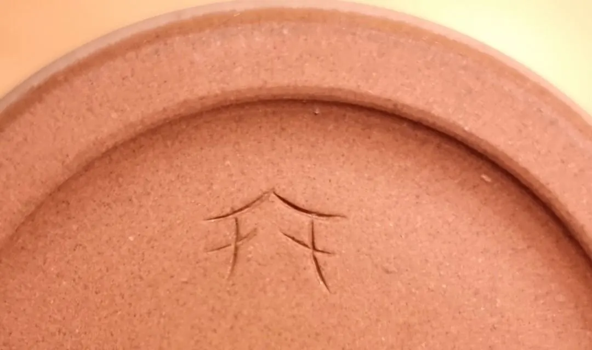

Pastas para gres
El gres es un tipo de pasta cerámica que llega hasta los 1300 °C y que al cocerse alcanza un proceso de vitrificación.
Vendemos pastas para gres. Escribinos para saber cuáles hay y a qué precio.
Escribir por WhatsApp
El gres es un tipo de pasta cerámica que llega hasta los 1300 °C y que al cocerse alcanza un proceso de vitrificación.
Vendemos pastas para gres. Escribinos para saber cuáles hay y a qué precio.
Escribir por WhatsApp